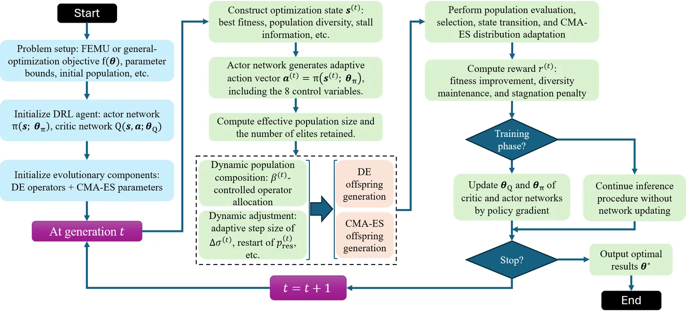
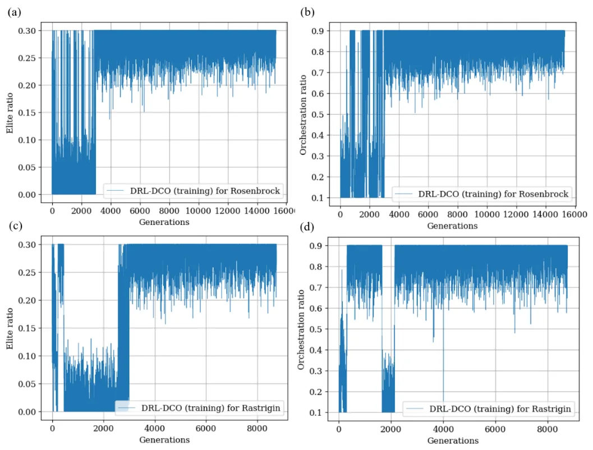
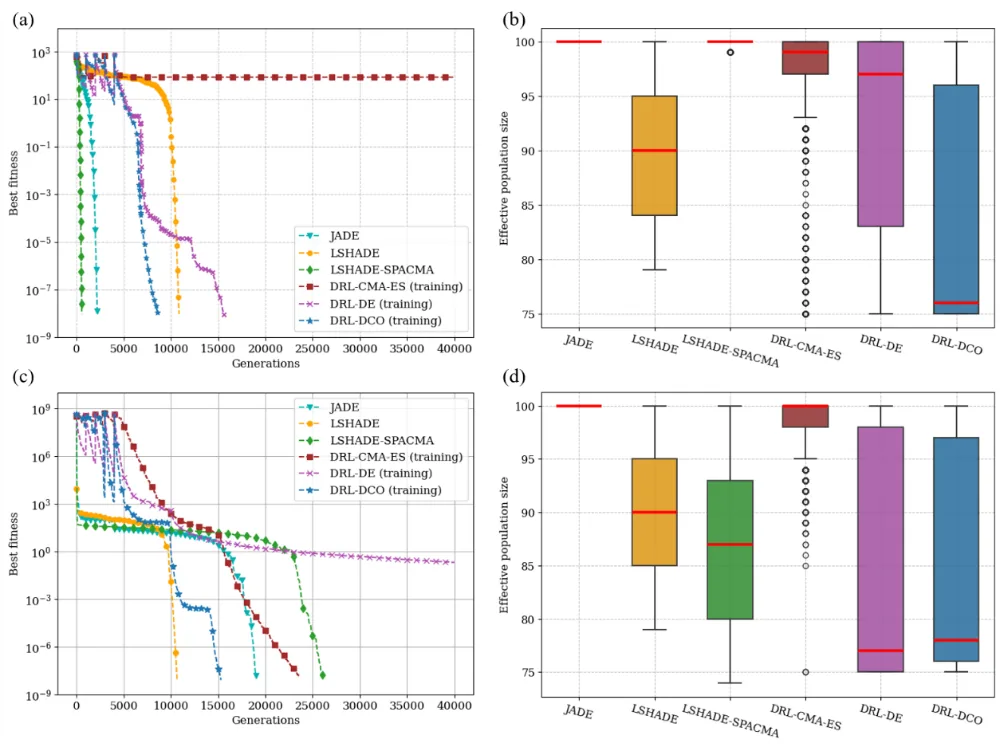
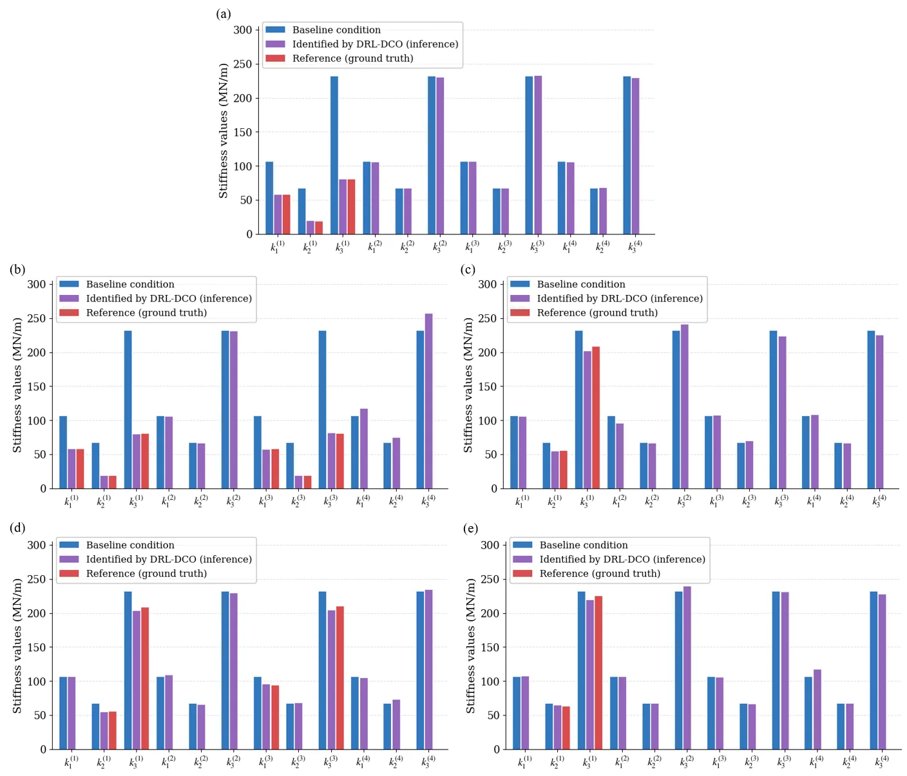

O problema: algoritmos evolutivos híbridos ainda são rígidos demais
Atualizar modelos estruturais—ajustar parâmetros de rigidez, massa ou propriedades de materiais até que simulações reproduzam medições reais—é um problema de otimização difícil. A paisagem de busca é não-convexa, multimodal e de alta dimensão: múltiplas combinações de parâmetros podem produzir respostas modais parecidas, e o ótimo global pode estar cercado de mínimos locais enganosos. Métodos baseados em gradiente ficam presos; algoritmos evolutivos (EAs) exploram melhor, mas exigem calibração manual de hiperparâmetros e equilibrar exploração e refinamento permanece uma arte.
Algoritmos evolutivos híbridos tentam combinar operadores complementares—por exemplo, Differential Evolution (DE) para exploração global via vetores de diferença e CMA-ES para refinamento local via adaptação de covariância. Mas a maioria das arquiteturas híbridas usa regras fixas de chaveamento: executa DE por N gerações, depois troca para CMA-ES, ou alterna conforme algum critério heurístico. O resultado é uma sequência de fases desconexas, sem coordenação contínua entre os operadores.
Pesquisadores da Universidade de Macau, da Universidade Hohai e da Universidade Beihang propõem uma solução: ensinar um agente de aprendizado por reforço profundo (deep RL) a orquestrar DE e CMA-ES dinamicamente, geração a geração, como um sistema unificado. O algoritmo resultante, DRL-DCO (Deep Reinforcement Learning-governed Dynamic DE-CMA-ES Orchestration), usa um agente actor-critic baseado em Deep Deterministic Policy Gradient (DDPG) para alocar recursos computacionais entre os dois operadores de forma contínua, observando estatísticas da população, sinais de progresso de fitness e indicadores de convergência.
A ideia central: orquestração contínua via política aprendida
DRL-DCO reformula a otimização evolutiva como um processo estocástico controlado. Em vez de aplicar DE ou CMA-ES de forma estática, o agente de RL observa o estado da busca—diversidade da população, taxa de melhoria de fitness, forma da distribuição—e gera ações contínuas que regulam simultaneamente: (1) a proporção de esforço de busca alocada entre DE e CMA-ES (orchestration ratio); (2) o tamanho efetivo da população; (3) a fração de soluções elite preservadas entre gerações; (4) a probabilidade de reiniciar a população para escapar de mínimos locais; (5) parâmetros internos do CMA-ES, como step-size e escala de covariância.
O núcleo é o orchestration ratio, um número contínuo entre 0 e 1 que determina quantos indivíduos não-elite são gerados por DE versus CMA-ES a cada geração. Isso permite que o algoritmo transite fluidamente entre regimes dominados por exploração, por refinamento ou mistos, sem descartar a estrutura distribucional acumulada pelo CMA-ES. A população evolui como um sistema único, não como fases mecânicas concatenadas.
O agente DDPG aprende essa política de controle em duas fases. Na fase de treinamento (agent-training), o actor interage com o ambiente de otimização, o critic avalia a qualidade das ações via recompensa informada por diversidade e progresso, e os pesos da rede são atualizados online. Após o treinamento, na fase de inferência (agent-inference), o actor opera sozinho: observa o estado, gera ações via forward pass e orquestra DE e CMA-ES sem avaliação do critic ou atualização de pesos. Essa inferência supervisionada permite deployment rápido e autônomo em novos problemas.

Representação de estado: o agente vê a paisagem e o progresso
Para tomar decisões informadas, o agente precisa de um estado rico. DRL-DCO constrói um vetor de estado progression-aware que combina estatísticas da população candidata com seis descritores de progresso: (1) taxa de melhoria de fitness (fitness improvement rate), medindo velocidade de convergência; (2) diversidade da população, capturando espalhamento no espaço de busca; (3) estatísticas de forma distribucional, como curtose e assimetria, revelando se a população está concentrada ou dispersa; (4) contagem de gerações estagnadas (stall count), sinalizando possível armadilha em mínimo local; (5) fitness relativo do melhor indivíduo; (6) distância entre elite e não-elite.
Essa representação dá ao actor uma visão temporalmente coerente da dinâmica de busca. Quando a diversidade cai e a melhoria estagna, o agente pode aumentar a alocação para DE e expandir a população. Quando o fitness melhora rapidamente mas a população está dispersa, pode intensificar CMA-ES e preservar mais elites. A política aprendida responde ao contexto observado, não a regras fixas.
Função de recompensa: balanceando progresso e diversidade
A recompensa que guia o aprendizado do agente combina dois termos: melhoria de fitness (quantos indivíduos melhoraram em relação à geração anterior) e preservação de diversidade (distância média entre indivíduos). Essa formulação diversity-informed incentiva o agente a não apenas minimizar o objetivo rapidamente, mas também manter exploração suficiente para evitar convergência prematura. Pesos ajustáveis permitem calibrar o trade-off entre velocidade e robustez.
Durante o treinamento, o critic estima o valor esperado de retorno acumulado para cada par estado-ação, e o actor ajusta sua política para maximizar esse valor. Experiências são armazenadas em replay buffer e amostradas em mini-batches para estabilizar o aprendizado. Redes-alvo (target networks) suavizam atualizações e reduzem oscilações.
Mecanismos adaptativos: população, elite, restart e controle interno do CMA-ES
Além do orchestration ratio, o agente controla quatro dimensões adicionais. Primeiro, o tamanho efetivo da população: o agente gera uma ação contínua que escala o número de indivíduos não-elite entre um mínimo e um máximo. Populações menores aceleram convergência em fases de refinamento; maiores ampliam cobertura em exploração.
Segundo, a fração de elite preservada (elite ratio): quantos dos melhores indivíduos são copiados diretamente para a próxima geração. Elite alta acelera convergência mas reduz diversidade; elite baixa mantém exploração mas pode desacelerar progresso. O agente aprende a modular esse balanço conforme o estado.
Terceiro, a probabilidade de restart: quando a contagem de gerações estagnadas sobe e a diversidade cai, o agente pode acionar reinicialização da população para escapar de mínimos locais. Isso é crucial em paisagens altamente multimodais como Rastrigin e Schwefel, onde mínimos enganosos são densos.
Quarto, dois parâmetros internos do CMA-ES: step-size (raio de busca) e covariance-scaling (orientação da distribuição). Esses controles permitem ajustar a exploração do CMA-ES sem descartar a matriz de covariância acumulada, preservando informação sobre correlações entre variáveis enquanto adapta a escala e direção da busca.

Validação em funções de benchmark: cinco paisagens, três dimensionalidades
Os autores testaram DRL-DCO em cinco funções de benchmark padrão—Ackley, Griewank, Rastrigin, Rosenbrock e Schwefel—em dimensionalidades Nd = 20, 30 e 50. Essas funções cobrem propriedades complementares: multimodalidade (Rastrigin, Schwefel), acoplamento entre variáveis (Griewank), vales estreitos e mal-condicionados (Rosenbrock), e ótimos enganosos distantes (Schwefel). O paper reporta resultados para Nd = 50, o caso mais desafiador.
Cinco baselines foram comparados: JADE (DE adaptativo com estratégia current-to-pbest e amostragem de parâmetros), SHADE (JADE com memória histórica de parâmetros bem-sucedidos), LSHADE (SHADE com redução linear de população), CMA-ES padrão, e LDE (DE com aprendizado de parâmetros por RL, mas sem orquestração de múltiplos operadores).
DRL-DCO superou todos os baselines em acurácia de convergência (melhor fitness final médio) e robustez (desvio-padrão menor entre 30 execuções independentes) na maioria das funções. Em Rastrigin, DRL-DCO atingiu fitness médio de 10⁻⁸ ordem de magnitude, enquanto JADE ficou em 10⁻⁴ e CMA-ES em 10⁻². Em Rosenbrock, DRL-DCO convergiu para 10⁻¹⁰, comparado a 10⁻⁶ do LSHADE. Em Schwefel, função enganosa onde muitos algoritmos ficam presos, DRL-DCO alcançou o ótimo global com maior frequência.

Aplicação prática: atualização de modelo estrutural no benchmark IASC-ASCE
Após validação em funções sintéticas, os autores aplicaram DRL-DCO ao benchmark IASC-ASCE de Structural Health Monitoring, um problema clássico de atualização de modelo de elementos finitos. O benchmark simula uma estrutura de quatro andares com 12 graus de liberdade, e cinco cenários de dano são definidos por reduções de rigidez em elementos específicos. O objetivo é identificar os coeficientes de rigidez de cada elemento minimizando o erro composto entre frequências naturais e formas modais simuladas versus medidas.
A função objetivo combina erro quadrático médio de frequências (MSE) e erro baseado no Modal Assurance Criterion (MAC) para formas modais, com pesos iguais (0.5 cada). O problema tem Nd = 12 parâmetros (um por elemento estrutural), mas é altamente acoplado: mudanças em um elemento afetam múltiplos modos, e múltiplas combinações de parâmetros podem produzir respostas modais similares, gerando uma paisagem não-convexa e multimodal.
DRL-DCO foi executado na fase de inferência (agent-inference): o actor treinado em funções de benchmark foi aplicado diretamente ao FEMU, sem retreinamento. Dez execuções independentes foram realizadas para cada cenário de dano. DRL-DCO identificou os valores de rigidez verdadeiros com alta precisão em todos os cinco cenários, superando JADE, SHADE, LSHADE, CMA-ES e LDE em acurácia média e robustez (menor variância entre execuções).
Por exemplo, no Cenário 1 (dano no elemento 3), DRL-DCO identificou o coeficiente de rigidez com erro relativo médio inferior a 1%, enquanto JADE e CMA-ES apresentaram erros de 3-5%. No Cenário 5 (dano em múltiplos elementos), a vantagem foi ainda maior: DRL-DCO manteve erro abaixo de 2% em todos os elementos, enquanto baselines oscilaram entre 5-10% em elementos críticos.

Análise de ablação: cada componente importa
Os autores conduziram estudos de ablação removendo componentes do DRL-DCO para isolar suas contribuições. Configurações testadas incluem: DE-only (orchestration ratio fixo em 1), CMA-ES-only (ratio fixo em 0), sem restart, sem controle de população, e sem elite ratio adaptativo.
Resultados mostram que nenhuma configuração simplificada iguala o DRL-DCO completo em todas as funções. DE-only performa bem em Rastrigin (multimodal denso) mas falha em Rosenbrock (vale estreito). CMA-ES-only refina rapidamente em Rosenbrock mas fica preso em mínimos locais em Schwefel. Sem restart, o algoritmo estagna em Rastrigin e Schwefel. Sem controle adaptativo de população, a convergência desacelera em alta dimensão.
Isso valida que a orquestração contínua e os mecanismos adaptativos são estruturalmente essenciais, não acessórios. O orchestration ratio permite transições fluidas entre exploração e refinamento; o restart escapa de armadilhas; o controle de população e elite balanceiam velocidade e robustez.
Limitações e o que o paper não mostra
O paper testa DRL-DCO em funções de benchmark de até 50 dimensões e em um problema FEMU de 12 parâmetros. Não há experimentos em problemas de centenas ou milhares de dimensões, onde a escalabilidade de algoritmos evolutivos é conhecidamente difícil. Também não há comparação com métodos Bayesianos de atualização de modelo (MCMC, TMCMC, variational inference), que oferecem quantificação de incerteza completa mas com custo computacional maior.
O treinamento do agente DDPG requer múltiplos episódios de otimização em funções de benchmark. O paper não reporta o custo total de treinamento (número de avaliações de função, tempo de parede) nem compara esse custo ao de calibrar manualmente hiperparâmetros de baselines. Em cenários onde apenas uma otimização será executada, o overhead de treinamento pode não se pagar.
A generalização do actor treinado em benchmarks para o FEMU é demonstrada, mas apenas em um benchmark estrutural. Não está claro se a política aprendida generaliza para outros domínios de engenharia (aerodinâmica, geotecnia, sistemas térmicos) ou se requer retreinamento. O paper também não explora transfer learning: treinar em uma classe de problemas e ajustar finamente em outra.
Finalmente, o paper não discute interpretabilidade: por que o agente toma certas decisões em momentos específicos? Quais features do estado são mais influentes? Análise de saliência ou visualização de atenção poderia revelar se o agente aprendeu heurísticas conhecidas ou descobriu estratégias novas.
O que isso significa para otimização e engenharia estrutural
DRL-DCO representa uma mudança de paradigma em algoritmos evolutivos híbridos: de arquiteturas estáticas ou chaveamento heurístico para coordenação contínua aprendida. A ideia de orquestração via política de RL é geral e pode ser estendida a outros pares de operadores (PSO + DE, GA + CMA-ES) ou a mais de dois operadores simultaneamente.
Para engenharia estrutural, a contribuição prática é clara: um otimizador que funciona out-of-the-box, sem calibração manual intensiva, em problemas de atualização de modelo onde avaliações de FEM são caras e a paisagem é desconhecida. A fase de inferência autônoma permite deployment em sistemas de monitoramento contínuo, onde modelos precisam ser atualizados periodicamente conforme novos dados de sensores chegam.
Mais amplamente, o trabalho ilustra como aprendizado por reforço pode ir além de ajustar hiperparâmetros isolados e, em vez disso, aprender políticas de controle de nível superior que coordenam processos complexos. Isso abre caminho para meta-otimização mais sofisticada: algoritmos que aprendem a orquestrar não apenas operadores evolutivos, mas também métodos de surrogate modeling, aquisição de dados adaptativos e alocação de recursos computacionais em ambientes distribuídos.
O que fica
- DRL-DCO usa um agente DDPG para orquestrar continuamente DE e CMA-ES via orchestration ratio, alocando recursos entre exploração e refinamento conforme o estado da busca muda.
- O agente controla cinco dimensões adaptativas: orchestration ratio, tamanho de população, elite preservation, restart probability e parâmetros internos do CMA-ES, tudo via política aprendida.
- Validado em benchmarks de até 50 dimensões e no IASC-ASCE FEMU, DRL-DCO supera JADE, SHADE, LSHADE, CMA-ES e LDE em acurácia e robustez, operando de forma autônoma após treinamento.
Comentários
Nenhum comentário ainda. Seja o primeiro.